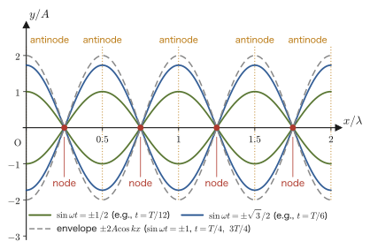

Chapter 11Basic Properties of Waves — The Equation of a Wave, Interference, Standing Waves, and Diffraction
When a stone is thrown onto the surface of water, ripples spread out in rings. When a guitar string is plucked, the vibration of the string travels through the air and reaches our ears as sound. When an earthquake occurs, the shaking that has traveled from the focus rocks buildings. Sunlight and the radio waves of a smartphone are also kinds of “waves.” Although the materials and phenomena involved are entirely different, all of these share the same mathematical structure, “vibrations being passed on one after another”—and this is the reason why, after mechanics, we study waves as a part in their own right. In high school physics you must have memorized the equation of a sinusoidal wave $y=A\sin(\omega t-kx+\phi)$ and the condition for waves to reinforce each other in interference, $\Delta=n\lambda$, as formulas. In this chapter we confirm that these formulas can be derived, without skipping a single line, from the picture that “every point of the medium is undergoing simple harmonic motion.”
The simple harmonic motion that we studied in Part I (Mechanics), in Chapter 7, was the motion of a single point going back and forth. A wave is nothing other than the phenomenon in which that simple harmonic motion is passed on, with successive time delays, to “the neighboring point, then the next one beyond it, …”—this chapter starts from this viewpoint (Section 11.1), then expresses the property of a wave of “traveling while keeping its shape” in the language of a differential equation, the one-dimensional wave equation (Section 11.2), and from it derives the wave function $y=A\sin(\omega t-kx+\phi)$ familiar from high school (Section 11.3). We then go on to the phase velocity and the direction in which a wave travels (Section 11.4), the energy carried by a wave (Section 11.5), the interference that occurs when several waves overlap (Section 11.6) and standing waves (Section 11.7), Huygens's principle, which explains how a wavefront propagates, together with the laws of reflection and refraction (Section 11.8), and finally diffraction (Section 11.9).
Overview of Part II, “Waves,” as a whole: The “general theory of waves” studied in this Chapter 11 (the wave function, interference, standing waves, reflection and refraction, and diffraction) is a common framework that applies to any wave, whatever the kind of medium. Part II is organized so as to apply this framework, one by one, to concrete phenomena.
- Chapter 11 (this chapter): The general theory of waves—the wave function, phase velocity, energy, interference, standing waves, Huygens's principle, and diffraction.
- Chapter 12 Sound Waves: Applying the general theory to the compression–rarefaction waves of air, we study the Doppler effect, beats, and the resonance of air columns and strings.
- Chapter 13 Fundamentals of Light Waves: Measuring the speed of light and the refractive index.
- Chapter 14 Reflection and Refraction of Light: Phase changes on reflection, Fermat's principle, and total internal reflection.
- Chapter 15 Lenses and Image Formation: How images are formed by means of refraction.
- Chapter 16 Interference of Light and the Diffraction Grating: Young's double-slit experiment, thin films, and Newton's rings (applications of this chapter's interference conditions to light).
- Chapter 17 Superposition of Waves and Fourier Analysis: Generalizing beats and standing waves, we proceed to wave packets and group velocity.
The superposition of several sinusoidal waves (beats and standing waves) is also the physical prototype of the Fourier series and Fourier transform (the theory that expresses an arbitrary waveform as a superposition of sinusoidal waves) studied in Part VI of the companion volume “University Mathematics” (AD 02) (Chapter 17 of this book). The general theory of the one-dimensional wave equation itself is treated in Chapter 43 of AD 02. Looking back at these mathematical tools after you have finished studying waves, you should see that the phenomena we met in this chapter were part of a broader framework.
- A review of the equation of motion, the general solution, and energy conservation for simple harmonic motion (Chapter 7), and the graphical picture of simple harmonic motion given by the reference circle
- The meaning of the one-dimensional wave equation $\pdiff{^2y}{t^2}=v^2\pdiff{^2y}{x^2}$, and the check that a function of the form $y=f(x-vt)$ satisfies it (an intuitive picture based on the tension and linear density of a string is given in Section 11.2; the derivation of the speed $v=\sqrt{S/\rho}$ of a wave on a string is carried out in Chapter 12)
- The procedure for deriving the wave function $y=A\sin(\omega t-kx+\phi)$ from the simple harmonic motion $y=A\sin(\omega t+\phi)$ of a single point of the medium by way of the propagation delay $t\to t-x/v$
- The phase velocity $v=\omega/k=f\lambda$, how it differs from the oscillation velocity ($\partial y/\partial t$) of each point of the medium itself, and how to determine the direction in which a wave travels
- The energy carried by a wave and the intensity $I=2\pi^2\rho_{\mathrm m} A^2f^2v$ (it is proportional to the square of the amplitude and to the square of the frequency)
- The interference conditions for two wave sources (in phase and in antiphase), and the derivation of the standing wave $y=2A\sin\omega t\cos kx$
- The idea of deriving the law of reflection and the law of refraction from Huygens's principle, and the condition under which diffraction becomes conspicuous
Source notes: Yasuhide Mochizuki, Physics Notes: Waves, pp. 1–8.
Notation and symbols for sinusoidal waves used in this part (Part II, Waves)
In the chapters on waves from here on, we consistently write a sinusoidal wave in the form
$$ y=A\sin(\omega t-kx+\phi) $$This is the same form as that used in high school textbooks, and it represents a wave traveling in the $+x$ direction (the meaning of this equation, and why the sign of the term $-kx$ expresses the fact that the wave “travels,” will be derived carefully in Sections 11.3 and 11.4). The symbols that appear in the equation are summarized in advance in Table 11.1.
| Symbol | Meaning | Unit |
|---|---|---|
| $y(x,t)$ | Displacement of the medium (a function of position $x$ and time $t$) | $\mathrm{m}$ |
| $A$ | Amplitude (maximum value of the displacement) | $\mathrm{m}$ |
| $\omega=2\pi/T=2\pi f$ | Angular frequency ($T$: period, $f$: frequency) | $\mathrm{rad/s}$ |
| $k=2\pi/\lambda$ | Wavenumber (the amount by which the phase advances per unit length; $\lambda$: wavelength) | $\mathrm{rad/m}$ |
| $\phi$ | Initial phase (the phase at $x=0,\ t=0$) | $\mathrm{rad}$ |
| $v=\omega/k=f\lambda$ | Phase velocity (speed of the wave) | $\mathrm{m/s}$ |
The meaning of $k=2\pi/\lambda$ and the derivation of $v=\omega/k$ are given in Section 11.3. Note that the spring constant was written $k$ in Chapter 7, but because this is easily confused with the wavenumber $k$, in this chapter we write the spring constant as $\kappa$ (kappa). When we use the complex representation $e^{i(kx-\omega t)}$, we will state, each time before using it, whether the real part or the imaginary part represents the physical displacement and how the sign of the phase corresponds to the convention adopted here.
11.1 Review of Simple Harmonic Motion — The Starting Point for Understanding Waves
To understand a wave as “a phenomenon in which each point of the medium undergoes simple harmonic motion while that oscillation is passed on to its neighbor, and then to the next one,” we first recall the essential points of simple harmonic motion (SHM) learned in Chapter 7. The equation of motion of a weight of mass $m\ [\mathrm{kg}]$ attached to a spring with spring constant $\kappa\ [\mathrm{N/m}]$ (we wrote $k$ in Chapter 7, but in this chapter we write $\kappa$ to distinguish it from the wavenumber $k$) is as follows:
\begin{equation} m\ddot x=-\kappa x \qquad\text{that is}\qquad m\ddot x+\kappa x=0 \label{eq:11-shm-eom} \end{equation}That was the equation of motion in Section 7.1. Solving it with the characteristic equation, we find that the general solution, in terms of the angular frequency $\omega=\sqrt{\kappa/m}\ [\mathrm{rad/s}]$, has the form $x(t)=C_1\cos\omega t+C_2\sin\omega t$. In Chapter 7, for the initial conditions $x(0)=A,\ \dot x(0)=0$ we obtained $x(t)=A\cos\omega t$ (the cosine form); but if we allow a general initial phase $\phi$, then by the addition theorem the same general solution can also be written in the sine form
\begin{equation} x(t)=A\sin(\omega t+\phi) \label{eq:11-shm-general} \end{equation}(Here $A=\sqrt{C_1^2+C_2^2}$ is the amplitude and $\phi$ is the initial phase. Whichever form we use, the set of motions that can be represented is the same; the two forms differ only in that the origin of the phase is shifted by $\pi/2$.) The argument $\omega t+\phi$ of $\sin$ is called the phase (unit: $\mathrm{rad}$). Comparing the addition theorem $A\sin(\omega t+\phi)=A\sin\phi\cos\omega t+A\cos\phi\sin\omega t$ with $x(t)=C_1\cos\omega t+C_2\sin\omega t$, we find the correspondence $C_1=A\sin\phi,\ C_2=A\cos\phi$, and conversely $A=\sqrt{C_1^2+C_2^2},\ \tan\phi=C_1/C_2$. Since from this chapter on we write the wave function uniformly in the $\sin$ form (see the conventions box at the start of the chapter), we write simple harmonic motion here, too, in the $\sin$ form of Eq. \eqref{eq:11-shm-general}. The relations among the angular frequency, the period, and the frequency are, as in Definition 7.1 of Chapter 7, $\omega=2\pi/T=2\pi f$.
Derivation: The energy conservation law for simple harmonic motion (the energy integral)
Multiplying both sides of Eq. \eqref{eq:11-shm-eom} by $\dot x=v$, we get
$$ m\dot v\cdot v=-\kappa x\cdot v \qquad\text{that is}\qquad mv\frac{\dd v}{\dd t}=-\kappa x\frac{\dd x}{\dd t} $$The left-hand side is equal to $\dfrac{\dd}{\dd t}\!\left(\dfrac12mv^2\right)=mv\dfrac{\dd v}{\dd t}$, and the right-hand side is equal to $\dfrac{\dd}{\dd t}\!\left(\dfrac12\kappa x^2\right)=\kappa x\dfrac{\dd x}{\dd t}$ (differentiation of a composite function; University Mathematics, Section 6.4), so we have
$$ \frac{\dd}{\dd t}\left(\frac12mv^2\right)=-\frac{\dd}{\dd t}\left(\frac12\kappa x^2\right) \qquad\therefore\qquad \frac{\dd}{\dd t}\left(\frac12mv^2+\frac12\kappa x^2\right)=0 $$That this derivative with respect to time is 0 means that the expression in parentheses is constant, independent of the time, so, with a constant of integration $E$, we have
\begin{equation} \frac12mv^2+\frac12\kappa x^2=E \label{eq:11-shm-energy} \end{equation}(If we write it by actually integrating both sides with respect to $t$, the same result follows from $\displaystyle\int mv\frac{\dd v}{\dd t}\dd t=-\int \kappa x\frac{\dd x}{\dd t}\dd t$.) This is the energy conservation law for simple harmonic motion. At the position where the displacement equals the amplitude $A$ we have $v=0$ for an instant (the turning point), so substituting $x=A,\ v=0$ gives $E=\tfrac12\kappa A^2$.
∎
Law 11.1: Energy conservation law for simple harmonic motion
For a simple harmonic oscillator of mass $m$ and spring constant $\kappa$, the relation below holds at any time ($A$ is the amplitude):
$$ \frac12mv^2+\frac12\kappa x^2=\frac12\kappa A^2=(\text{constant}) $$The first term on the right-hand side is the kinetic energy, and the second term is the potential energy due to the elastic force; their sum (the mechanical energy) is conserved. The speed is greatest at the instant of passing through $x=0$ (the position of the natural length), and from $\tfrac12mv_{\max}^2=\tfrac12\kappa A^2$ we get $v_{\max}=A\omega$ (with $\omega=\sqrt{\kappa/m}$).
We will use this energy integral (the technique of multiplying both sides of the equation of motion by the velocity and integrating over time) once more, exactly as it stands, for the oscillation of a single point of the medium when we find the energy carried by a wave in Section 11.5. We have therefore reviewed the procedure here so that the same calculation can be recalled.
11.1.1 The reference circle — simple harmonic motion as the orthogonal projection of circular motion
One way to picture simple harmonic motion in a diagram is the reference circle. Consider a point $P$ that moves in uniform circular motion, counterclockwise with angular velocity $\omega$, on a circle of radius $A$. If at time $t=0$ the point $P$ is at the position advanced by an angle $\phi$ from the reference direction, then the angle of rotation at time $t$ is $\omega t+\phi$ (on the reference circle, the phase $\omega t+\phi$ equals the angle of rotation of the point $P$ measured from the reference direction). If we let $y$ be the position of the shadow obtained by projecting this point $P$ perpendicularly onto a certain diameter (axis) through the center of the circle, then we have
$$ y=A\sin(\omega t+\phi) $$which is exactly the simple harmonic motion of Eq. \eqref{eq:11-shm-general} (Figure 11.1). In other words, simple harmonic motion can be regarded as “the motion of the shadow of a circular motion with constant angular velocity, seen from a certain direction.” This viewpoint will help us later to picture the phase $\omega t-kx+\phi$ of the wave function intuitively as an angle of rotation.
Example 11.1: Angular frequency and period
A weight of mass $m=0.5\ \mathrm{kg}$ is attached to a spring with spring constant $\kappa=200\ \mathrm{N/m}$. Find the angular frequency $\omega$ and the period $T$. Also find the maximum velocity $v_{\max}$ when the weight oscillates with amplitude $A=0.05\ \mathrm{m}$.
Solution. The angular frequency is
$$ \omega=\sqrt{\frac{\kappa}{m}}=\sqrt{\frac{200\ \mathrm{N/m}}{0.5\ \mathrm{kg}}}=\sqrt{400\ \mathrm{s^{-2}}}=20\ \mathrm{rad/s} $$The period is $T=2\pi/\omega=2\pi/20=\pi/10\ \mathrm{s}\approx0.314\ \mathrm{s}$. By Law 11.1, the maximum velocity is given by
$$ v_{\max}=A\omega=0.05\ \mathrm{m}\times20\ \mathrm{s^{-1}}=1.0\ \mathrm{m/s} $$This is the required maximum velocity.
Example 11.2: The reference circle and the initial phase
Suppose that the displacement of a particle (point mass) undergoing simple harmonic motion with period $T=3.0\ \mathrm{s}$ is given by $y=A\sin(\omega t+\phi)$, and that at $t=0$ the point $P$ on the reference circle is at the position at angle $\phi=\pi/6$ ($30^\circ$) from the reference direction (the $x$ axis). (1) What multiple of $A$ is the displacement at $t=0$? (2) Find the time at which the displacement first reaches its maximum value $A$.
Solution. The angular frequency is $\omega=2\pi/T=2\pi/3.0=2\pi/3\ \mathrm{rad/s}$.
(1) Since $y(0)=A\sin\phi=A\sin(\pi/6)=A/2$, the displacement is 0.5 times $A$ (on the reference circle, this corresponds to the height $A\sin30^\circ$ of the point $P$).
(2) We have $y=A$ when $\sin(\omega t+\phi)=1$, that is, when $\omega t+\phi=\pi/2+2n\pi$ ($n$ an integer). The first time with $t\geqq0$ is the one for $n=0$, and it is obtained as follows:
$$ \omega t=\frac{\pi}{2}-\phi=\frac{\pi}{2}-\frac{\pi}{6}=\frac{\pi}{3} \qquad\therefore\qquad t=\frac{\pi/3}{2\pi/3}=\frac12=0.50\ \mathrm{s} $$If we check this on the reference circle, the point $P$ need only rotate by $60^\circ=\pi/3$ from the $30^\circ$ position to straight up ($90^\circ$), which is $1/6$ of one full revolution ($360^\circ$), that is, $T/6=0.50\ \mathrm{s}$.
The above are the essential points of simple harmonic motion, which is a prerequisite for studying waves. From the next section on, we proceed from the viewpoint that a wave is an arrangement of this “simple harmonic motion of a single point” in which the phase is shifted little by little in space.
11.2 The Wave Equation — The Mathematics of a Waveform Traveling without Distortion
The most important property that characterizes a wave is that it “travels at a constant speed without distorting its waveform (the shape of its crests and troughs).” The ripples spreading across a pond, a pulse traveling along a string, and a burst of sound differ in the speed $v$ at which they travel, which depends on the medium, but they share the property of “traveling while keeping their shape.” The mathematical expression that captures this property exactly is the following one-dimensional wave equation.
Formula 11.1: One-dimensional wave equation
If the displacement $y(x,t)$ (a function of the two variables position $x$ and time $t$) satisfies
\begin{equation} \pdiff{^2y}{t^2}=v^2\pdiff{^2y}{x^2} \label{eq:11-wave-eq} \end{equation}then $y(x,t)$ represents a one-dimensional wave traveling at speed $v\ [\mathrm{m/s}]$. The left-hand side represents how a point of the medium accelerates in the time direction, and the right-hand side represents how much the displacement curves in the spatial direction (a quantity corresponding to the “curvature” in the $x$ direction). This equation states the relation “the acceleration at a point is proportional to the degree to which the displacement bends relative to its surroundings.”
Intuition: Why acceleration is proportional to the “degree of bending”
Consider a very small piece of length $\Delta x$ of a taut string (linear density $\rho\ [\mathrm{kg/m}]$, tension $S\ [\mathrm N]$). Both ends of this piece are pulled with tension $S$ in the direction of the tangent to the string. Where the string curves convex upward (a crest), the tensions at the two ends combine to leave a net downward force, and where it curves convex downward (a trough), a net upward force remains. The magnitude of the force is proportional to the difference of the slope $\partial y/\partial x$ between the two ends, and for small slopes it becomes $S\,\dfrac{\partial^2y}{\partial x^2}\Delta x$. From Newton's equation of motion $\rho\Delta x\,\dfrac{\partial^2y}{\partial t^2}=S\,\dfrac{\partial^2y}{\partial x^2}\Delta x$ for the mass $\rho\Delta x$ acted on by this force, we get $\partial^2y/\partial t^2=(S/\rho)\,\partial^2y/\partial x^2$, and setting $v^2=S/\rho$ gives Eq. \eqref{eq:11-wave-eq}. Newton's second law itself—“the greater the bending (the larger $\partial^2y/\partial x^2$), the more strongly the string is pulled back”—is exactly the substance of this equation (for a careful derivation, see University Mathematics, Section 43.2. In Section 12.6, we derive the speed $v=\sqrt{S/\rho}$ of a wave on a string by a different method).
The expressions $\partial^2y/\partial t^2,\ \partial^2y/\partial x^2$ appearing in Eq. \eqref{eq:11-wave-eq} are second-order versions of the partial derivative (when $y$ is a function of the two variables $x,t$, the operation of holding one fixed and differentiating with respect to the other alone; University Mathematics, Section 6.2). $\partial y/\partial t$ represents “the rate of change of $y$ when the position $x$ is held fixed and only the time $t$ is varied,” that is, the velocity at which that point of the medium actually oscillates (later we call it the “oscillation velocity of the medium” to distinguish it from the phase velocity; Section 11.4), and $\partial y/\partial x$ represents “the rate of change of $y$ when the time $t$ is held fixed and only the position $x$ is varied,” that is, the slope of the waveform at a given instant. The wave equation is the first place where partial derivatives are used in earnest in a physics problem.
Why can this equation express “traveling while keeping its shape”?
To state the conclusion first, every function satisfying Eq. \eqref{eq:11-wave-eq} can always be written in the form
$$ y(x,t)=f(x-vt)+g(x+vt) $$(Theorem 11.1. The functions $f,g$ may have any shape as long as they are twice differentiable. The proof that every solution has this form is given in the “Proof” below). Here $f(x-vt)$ is the waveform $f(x)$ at time $t=0$ translated, entirely unchanged, in the $+x$ direction by a distance $vt$—indeed, when the time is advanced from $t=0$ to $t=t_0$, the graph of $f(x-vt_0)$ is just the graph of $f(x)$ shifted to the right by $vt_0$ (Figure 11.2, top). Likewise, $g(x+vt)$ is a waveform traveling in the $-x$ direction (Figure 11.2, bottom). In other words, the wave equation is an equation that allows as solutions only sums of “functions whose shape is simply translated in the $x$ direction” and “functions whose shape is simply translated in the $-x$ direction,” and this is the mathematical substance of the property “travels while keeping its waveform.” Below we actually verify this.
Derivation: Checking that $y=f(x-vt)$ satisfies the wave equation
Let $f$ be an arbitrary (twice differentiable) function of one variable, let $u\equiv x-vt$, and consider $y(x,t)=f(u)=f(x-vt)$. Since $u$ is a function of $x,t$ ($\partial u/\partial x=1,\ \partial u/\partial t=-v$), to differentiate $y$ partially with respect to $t$ we use the chain rule (University Mathematics, Section 6.4):
$$ \pdiff{y}{t}=\frac{\dd f}{\dd u}\cdot\pdiff{u}{t}=f'(u)\cdot(-v)=-vf'(u) $$(Here $f'(u)=\dd f/\dd u$ is the result of differentiating $f$ once with respect to its argument $u$. Since $x$ does not contain $t$, $\partial u/\partial t=\partial(x-vt)/\partial t=-v$.) Differentiating partially with respect to $t$ once more (the same formula applies, since $f'(u)$ is also a composite function that depends on $t$ through $u$) gives
$$ \pdiff{^2y}{t^2}=\pdiff{}{t}\bigl[-vf'(u)\bigr]=-v\cdot f''(u)\cdot\pdiff{u}{t}=-v\cdot f''(u)\cdot(-v)=v^2f''(u) $$On the other hand, differentiating partially with respect to $x$, since $\partial u/\partial x=1$, we have
$$ \pdiff{y}{x}=f'(u)\cdot\pdiff{u}{x}=f'(u)\cdot1=f'(u), \qquad \pdiff{^2y}{x^2}=f''(u)\cdot\pdiff{u}{x}=f''(u) $$Therefore,
$$ \pdiff{^2y}{t^2}=v^2f''(u)=v^2\pdiff{^2y}{x^2} $$and Eq. \eqref{eq:11-wave-eq} indeed holds (regardless of the specific form of $f$). As long as $f$ is twice differentiable, it may be anything—a trigonometric function, a pulse-shaped hump, whatever. We have shown that “a waveform of any shape satisfies the wave equation, so long as it is a function that can be written using only the combination $x-vt$.”
∎
Carrying out exactly the same procedure for $w\equiv x+vt$ ($\partial w/\partial t=+v,\ \partial w/\partial x=1$), we find that for $y=g(x+vt)$ as well, $\partial^2y/\partial t^2=v^2g''(w)=v^2\,\partial^2y/\partial x^2$, so it too satisfies the wave equation (the only change is that the sign of $\partial w/\partial t$ goes from $-v$ to $+v$, and in the second derivative the sign is multiplied in once more and cancels, so the conclusion is the same. You will check this yourself in Exercise 11.2). The wave equation \eqref{eq:11-wave-eq} is linear in $y$ (it is built only from first-degree expressions in $y$), so the sum of two solutions is again a solution (the principle of superposition). Summarizing the above, the following theorem holds.
Theorem 11.1: General solution of the one-dimensional wave equation (d'Alembert's solution)
The general solution of the one-dimensional wave equation \eqref{eq:11-wave-eq} can be written, using arbitrary twice differentiable functions $f,g$, as
\begin{equation} y(x,t)=f(x-vt)+g(x+vt) \label{eq:11-dalembert} \end{equation}The term $f(x-vt)$ represents a wave traveling in the $+x$ direction at speed $v$ while keeping its shape, and likewise $g(x+vt)$ represents a wave traveling in the $-x$ direction at speed $v$.
Proof: Every solution of the wave equation can be written in the form $f(x-vt)+g(x+vt)$
We change to the new independent variables $\xi\equiv x-vt,\ \eta\equiv x+vt$. Regarding $y$ as a function of $\xi,\eta$, the chain rule for partial derivatives (University Mathematics, Section 6.4), together with $\partial\xi/\partial x=1,\ \partial\eta/\partial x=1,\ \partial\xi/\partial t=-v,\ \partial\eta/\partial t=+v$, gives
$$ \pdiff{}{x}=\pdiff{}{\xi}+\pdiff{}{\eta},\qquad \pdiff{}{t}=-v\pdiff{}{\xi}+v\pdiff{}{\eta} $$Using this once more (if $y$ is twice continuously differentiable, the order of the partial differentiations with respect to $\xi$ and $\eta$ can be interchanged), we obtain
$$ \pdiff{^2y}{x^2}=\pdiff{^2y}{\xi^2}+2\,\frac{\partial^2y}{\partial\xi\,\partial\eta}+\pdiff{^2y}{\eta^2}, \qquad \pdiff{^2y}{t^2}=v^2\left(\pdiff{^2y}{\xi^2}-2\,\frac{\partial^2y}{\partial\xi\,\partial\eta}+\pdiff{^2y}{\eta^2}\right) $$Therefore,
$$ \pdiff{^2y}{t^2}-v^2\pdiff{^2y}{x^2}=-4v^2\,\frac{\partial^2y}{\partial\xi\,\partial\eta} $$and the wave equation \eqref{eq:11-wave-eq} is equivalent to $\dfrac{\partial}{\partial\eta}\!\left(\dfrac{\partial y}{\partial\xi}\right)=0$. That partial differentiation with respect to $\eta$ gives $0$ means that $\partial y/\partial\xi$ does not depend on $\eta$ and is a function $F(\xi)$ of $\xi$ alone. Integrating this with respect to $\xi$, the part corresponding to the constant of integration becomes (since it does not involve partial differentiation with respect to $\eta$) a function $g(\eta)$ of $\eta$ alone, and setting $\int F(\xi)\,\dd\xi\equiv f(\xi)$, we obtain
$$ y=f(\xi)+g(\eta)=f(x-vt)+g(x+vt) $$That is, any solution of the wave equation can be written in the form $f(x-vt)+g(x+vt)$ (that, conversely, anything of this form is a solution was verified earlier).
∎
Math Tool: The general theory of the wave equation
The procedure of deriving the wave equation, starting from a specific medium (a string, an air column, the electromagnetic field, etc.), by means of Newton's laws or Maxwell's equations is treated rigorously in University Mathematics (AD 02). The procedure for deriving the wave equation from a transverse wave on a string is given in University Mathematics, Section 43.2, and the solution of the wave equation by separation of variables is treated in Sections 43.4 (one dimension) and 43.5 (two dimensions). The mechanism by which solutions of the form $y=f(x-vt)$ arise is itself treated in University Mathematics, Section 42.5 (partial differential equations for traveling waves). In Section 12.6 of this book, we derive the speed $v=\sqrt{S/\rho}$ ($S$: tension, $\rho$: linear density) of a wave on a string from the standpoint of an observer moving along with the wave.
Example 11.3: Verifying that a sinusoidal wave satisfies the wave equation
Verify, by direct partial differentiation, that $y(x,t)=A\sin(\omega t-kx+\phi)$ ($A,\omega,k,\phi$ are constants; $k$ is the wavenumber and $\omega$ is the angular frequency, as in Table 11.1) satisfies the one-dimensional wave equation \eqref{eq:11-wave-eq} when $v=\omega/k$.
Solution. Differentiating partially twice with respect to $t$ (treating $x$ as a constant), we get
$$ \pdiff{y}{t}=A\omega\cos(\omega t-kx+\phi), \qquad \pdiff{^2y}{t^2}=-A\omega^2\sin(\omega t-kx+\phi) $$Differentiating partially twice with respect to $x$ (treating $t$ as a constant; note that $\partial(-kx)/\partial x=-k$), we get
$$ \pdiff{y}{x}=-Ak\cos(\omega t-kx+\phi), \qquad \pdiff{^2y}{x^2}=-Ak^2\sin(\omega t-kx+\phi) $$Therefore,
$$ v^2\pdiff{^2y}{x^2}=v^2\times\bigl[-Ak^2\sin(\omega t-kx+\phi)\bigr] $$For this to coincide with $\partial^2y/\partial t^2=-A\omega^2\sin(\omega t-kx+\phi)$, it suffices that $v^2k^2=\omega^2$, that is, $v=\omega/k$ (we take $v\gt0,\ \omega\gt0,\ k\gt0$). Indeed, substituting $v=\omega/k$ gives
$$ v^2\pdiff{^2y}{x^2}=\left(\frac{\omega}{k}\right)^2\times\bigl[-Ak^2\sin(\cdots)\bigr]=-A\omega^2\sin(\cdots)=\pdiff{^2y}{t^2} $$so the two sides do coincide. The sinusoidal wave $y=A\sin(\omega t-kx+\phi)=A\sin\{-k(x-(\omega/k)t)+\phi\}$ is a function of $x-vt$ alone ($v=\omega/k$), so it is nothing but a special case of $f(x-vt)$ in Theorem 11.1 (a wave traveling in the $+x$ direction).
11.3 What Is a Wave? — Transverse and Longitudinal Waves and the Derivation of the Wave Function
11.3.1 Transverse and longitudinal waves
Definition 11.1: Wave
A phenomenon in which the vibration of a medium (the substance itself that carries the wave: water for a wave on a water surface, air for a sound wave, and the string for a wave on a string) is transmitted successively (to the neighboring part, then to the part next to that) is called a wave.
Waves are classified into two types according to the relationship between the direction in which the wave travels and the direction in which each point of the medium vibrates.
Definition 11.2: Transverse and longitudinal waves
A wave in which the direction of propagation of the wave and the direction of vibration of the medium are perpendicular is called a transverse wave. A wave in which the direction of propagation and the direction of vibration are parallel is called a longitudinal wave.
Examples of transverse waves are a wave traveling along a string (the string vibrates up and down, and the wave travels left and right along the string), the S wave of an earthquake (a shear wave), and a light wave (the electric and magnetic fields vibrate perpendicular to the direction of propagation; light also propagates through a vacuum, and what vibrates and propagates is not matter but the electric and magnetic fields; light is treated in Chapter 13 and Section 42.4). Examples of longitudinal waves are a sound wave (the pressure and density of the air vary along the direction of vibration, which is also the direction of propagation) and the P wave of an earthquake (a compressional wave). In high school physics you may have memorized only that “sound is a longitudinal wave,” but here let us confirm that transverse waves and longitudinal waves are distinguished by the unified definition in terms of “the relationship between the direction of propagation and the direction of vibration.”
Definition 11.3: Sparse and dense regions
When we consider a longitudinal wave (a sound wave, for example), the state in which the medium at some position is crowded together relative to its surroundings is called a dense region (also called a compression), and the state in which it is spread out (thinner) is called a sparse region (also called a rarefaction). A longitudinal wave can also be described as a wave in which the pattern of the medium alternately becoming sparse and dense is transmitted in the direction of propagation (sound waves are treated in detail in Chapter 12).
Just as for a transverse wave, the pattern of dense and sparse regions of a longitudinal wave can be read from a graph of “displacement $y$ versus position $x$” (Figure 11.3). For a longitudinal wave, however, the particles of the medium are displaced along the direction of propagation (the $x$ direction), so the $y$ on the vertical axis of the graph is the displacement along the $x$ direction redrawn in the vertical direction. By convention, $y\gt0$ means “displaced in the $+x$ direction” and $y\lt0$ means “displaced in the $-x$ direction.” Then, where the slope $\partial y/\partial x$ of the curve is negative, the particles to the left of that point are displaced farther to the right and those to the right are displaced farther to the left, so the spacing between neighbors shrinks and the region becomes dense. Conversely, where the slope is positive, the spacing between neighbors widens and the region becomes sparse. In formulas: the actual spacing between two adjacent particles whose equilibrium positions are $x$ and $x+\Delta x$ is $\Delta x+\{y(x+\Delta x)-y(x)\}\approx\Delta x\,(1+\partial y/\partial x)$, so the fractional change in density is proportional to $-\partial y/\partial x$. In the figure, the points where the displacement is $0$ and the curve descends from a crest to a trough (the red points) are the densest, and the points where the curve ascends from a trough to a crest (the blue points) are the sparsest.
Caution: The positions of dense and sparse regions do not depend on the direction of propagation
Whether the wave travels in the $+x$ direction or in the $-x$ direction, if the waveform at a given instant (the $y$–$x$ graph) is the same, the positions where dense and sparse regions occur (the places where the slope of the curve is steep) do not change. Note that what determines the positions of the dense and sparse regions is “the shape of the waveform at that instant (the distribution of slopes),” not “which way the wave travels” (the direction of propagation determines which way the whole pattern of dense and sparse regions moves as time passes).
11.3.2 Derivation of the wave function
Let us now construct concretely the function $y(x,t)$ that describes a wave. Suppose that the point of the medium at the origin ($x=0$) is executing the simple harmonic motion
$$ y(0,t)=A\sin(\omega t+\phi) $$(this has the same form as Eq. \eqref{eq:11-shm-general} in Section 11.1; $\phi$ is the initial phase). Suppose that this vibration propagates in the $+x$ direction with speed $v$. The point of the medium at position $x$ ($x\gt0$) begins exactly the same vibration, delayed by the time $x/v$ that the wave needs to reach that point after the vibration occurs at the origin. In other words, the displacement $y(x,t)$ at position $x$ is equal to the expression for the displacement at the origin with the time replaced by $t\to t-x/v$:
\begin{equation} y(x,t)=y\!\left(0,\ t-\frac{x}{v}\right)=A\sin\!\left\{\omega\left(t-\frac{x}{v}\right)+\phi\right\} \label{eq:11-wave-delay} \end{equation}(The meaning of the replacement $t\to t-x/v$ is that “the height of the waveform seen at position $x$ at time $t$ is the same as the height at the origin a time $x/v$ earlier”—this corresponds exactly to the idea of $f(x-vt)$ that we saw in Eq. \eqref{eq:11-dalembert}.) Expanding the parentheses, we obtain
$$ y(x,t)=A\sin\left(\omega t-\frac{\omega}{v}x+\phi\right) $$Here we relate the coefficient $\omega/v$ to the wavelength $\lambda$. During one period $T$ the wave advances a distance $v T$ (equal to the wavelength $\lambda$; that is, $\lambda=vT$), and therefore
$$ \frac{\omega}{v}=\frac{2\pi/T}{v}=\frac{2\pi}{vT}=\frac{2\pi}{\lambda} $$We call this quantity the wavenumber and denote it by $k$:
\begin{equation} k\equiv\frac{\omega}{v}=\frac{2\pi}{\lambda}\ [\mathrm{rad/m}] \label{eq:11-wavenumber} \end{equation}(The wavenumber $k$ is the quantity that tells “how many radians the phase advances per unit length,” just as the angular frequency $\omega$ tells “how many radians the phase advances per unit time”; the two form a pair, a spatial version and a temporal version.) Rewriting the expression with Eq. \eqref{eq:11-wavenumber}, we obtain the following wave function.
Formula 11.2: Wave function of a sinusoidal wave
A sinusoidal wave traveling in the $+x$ direction with speed $v$ is expressed as
\begin{equation} y(x,t)=A\sin(\omega t-kx+\phi),\qquad k=\frac{\omega}{v}=\frac{2\pi}{\lambda} \label{eq:11-wavefunc} \end{equation}This is the equation of a sinusoidal wave that was given in the conventions box at the beginning of this chapter and is used consistently throughout Part II. Here $A$ is the amplitude, $\omega=2\pi/T=2\pi f$ is the angular frequency, $k=2\pi/\lambda$ is the wavenumber, and $\phi$ is the initial phase. As we confirmed in Example 11.3 in Section 11.2, if we set $v=\omega/k$, this satisfies the wave equation, Eq. \eqref{eq:11-wave-eq}, and is a special case (the sinusoidal case) of the form $f(x-vt)$.
![Top panel (a): a y-x graph showing the waveform at time t (solid line) overlaid with the waveform at time t-x1/v (dashed line). Translating the dashed curve to the right by a distance x1 (=vΔt) gives the solid curve, so the height of the dashed curve at the origin equals the height of the solid curve at position x1. Bottom panel (b): waveforms at four instants spaced T/8 apart, overlaid; the crest positions move to the right. The horizontal axis is in units of the wavelength λ and the vertical axis in units of the amplitude A](figs/ch11_fig11-4.svg)
Example 11.4: Finding the displacement from the wave function
A sinusoidal wave with amplitude $A=0.02\ \mathrm{m}$ and period $T=0.5\ \mathrm{s}$ travels in the $+x$ direction with speed $v=2.0\ \mathrm{m/s}$. Let the initial phase be $\phi=0$. (1) Find the angular frequency $\omega$, the wavelength $\lambda$, and the wavenumber $k$. (2) Find the displacement $y$ at time $t=0.6\ \mathrm{s}$ and position $x=1.0\ \mathrm{m}$.
Solution. (1) $\omega=2\pi/T=2\pi/0.5=4\pi\ \mathrm{rad/s}$. The wavelength is $\lambda=vT=2.0\times0.5=1.0\ \mathrm{m}$, and by Eq. \eqref{eq:11-wavenumber} the wavenumber is $k=2\pi/\lambda=2\pi/1.0=2\pi\ \mathrm{rad/m}$ (using $k=\omega/v=4\pi/2.0=2\pi\ \mathrm{rad/m}$ instead gives the same value, which serves as a check).
(2) Substituting the numerical values into Formula 11.2, we have
$$ \omega t-kx+\phi=4\pi\times0.6-2\pi\times1.0+0=2.4\pi-2.0\pi=0.4\pi\ \mathrm{rad} $$(Here $0.4\pi\ \mathrm{rad}=72^\circ$.) Therefore,
$$ y=A\sin(0.4\pi)=0.02\ \mathrm{m}\times\sin72^\circ\approx0.02\times0.9511\approx0.0190\ \mathrm{m} $$.
11.4 Phase Velocity and the Direction of Propagation
Given the wave function $y=A\sin(\omega t-kx+\phi)$ (Formula 11.2), let us investigate “where the crests (the points where the displacement is maximal) are located, and how they move in time.” The sine function $\sin\theta$ attains its maximum value $1$ when $\theta=\pi/2+2n\pi$ ($n\in\mathbb{Z}$), so at the position of a crest
\begin{equation} \omega t-kx+\phi=\frac{\pi}{2}+2n\pi \label{eq:11-crest-phase} \end{equation}holds (Figure 11.5). As an example, consider the case $n=0$. Solving Eq. \eqref{eq:11-crest-phase} for $x$, we obtain
$$ \omega t-kx+\phi=\frac{\pi}{2} \qquad\Longrightarrow\qquad kx=\omega t+\phi-\frac{\pi}{2} \qquad\therefore\quad x=\frac{\omega t+\phi-\dfrac{\pi}{2}}{k} $$This is the result (intermediate step: multiplying both sides of $-kx=\pi/2-\omega t-\phi$ by $-1$ gives $kx=\omega t+\phi-\pi/2$, and finally we divide by $k$). Differentiating this $x$ with respect to the time $t$ tells us how fast the position of the crest moves:
\begin{equation} \frac{\dd x}{\dd t}=\dot x=\frac{\omega}{k}=\frac{2\pi/T}{2\pi/\lambda}=\frac{\lambda}{T}=f\lambda \qquad\cdots\ ① \label{eq:11-phase-velocity} \end{equation}(We used the fact that $1/k=\lambda/(2\pi)$, which follows from $k=2\pi/\lambda$.) For a general $n$ as well, $x=(\omega t+\phi-\pi/2-2n\pi)/k$, and since $n$ is a constant, differentiating with respect to time gives the same $\omega/k$. That is, all the crests move at the same speed (the spacing between adjacent crests is $2\pi/k=\lambda$). Eq. \eqref{eq:11-phase-velocity} is the speed at which a point of one particular phase, the “crest,” moves, and because it is obtained by differentiating the phase, it is called the phase velocity. Recalling that we put $v=\omega/k$ when we constructed Eq. \eqref{eq:11-wavefunc}, the phase velocity is, after all, just $v$ itself.
The difference between phase velocity and the oscillation velocity of the medium
The phrase “speed of a wave” actually has two meanings that are easily confused. One is the phase velocity $v=\omega/k=f\lambda$ that we have just found, which is the speed at which features of the waveform, such as “crests” and “troughs,” travel through space. The other is the speed at which a single point of the medium (a single point with $x$ held fixed) actually oscillates up and down (in the case of a transverse wave), namely $\partial y/\partial t$; to distinguish it, we call this the oscillation velocity of the medium. Taking the partial derivative of the wave function $y=A\sin(\omega t-kx+\phi)$ with respect to $t$ with $x$ held fixed gives
$$ \pdiff{y}{t}=A\omega\cos(\omega t-kx+\phi) $$which is a quantity that varies periodically with time from $-A\omega$ to $+A\omega$, and is an entirely different quantity from the constant value $v=\omega/k$. For example, a piece of wood floating on the water surface (one point of the medium) returns to almost its original position after the wave has passed (although for water-surface waves the piece of wood moves roughly in a circle); it is not carried out to sea together with the wave—what travels out to sea is the pattern of the waveform, the “crests” and “troughs” (advancing at the phase velocity), and not the medium itself (which merely oscillates at the oscillation velocity). Let us be sure to distinguish the two clearly.
Example 11.5: Phase velocity and the oscillation velocity of the medium
For the wave $y=0.020\sin(4\pi t-2\pi x)\ [\mathrm m]$ (the unit of $t$ is $\mathrm s$ and the unit of $x$ is $\mathrm m$), (1) find the phase velocity $v$, the wavelength $\lambda$, and the period $T$. (2) Find the maximum value of the velocity $\partial y/\partial t$ of the point of the medium at the position $x=0$, and compare it with the phase velocity in (1).
Solution. (1) Comparing the given expression with $y=A\sin(\omega t-kx+\phi)$, we have $A=0.020\ \mathrm m,\ \omega=4\pi\ \mathrm{rad/s},\ k=2\pi\ \mathrm{rad/m},\ \phi=0$. The phase velocity is
$$ v=\frac{\omega}{k}=\frac{4\pi}{2\pi}=2.0\ \mathrm{m/s} $$The wavelength is $\lambda=2\pi/k=2\pi/2\pi=1.0\ \mathrm m$ and the period is $T=2\pi/\omega=2\pi/4\pi=0.50\ \mathrm s$ (these agree with $v=\lambda/T=1.0/0.50=2.0\ \mathrm{m/s}$).
(2) Taking the partial derivative with respect to $t$ with $x$ held fixed, we obtain
$$ \pdiff{y}{t}=0.020\times4\pi\cos(4\pi t-2\pi x)=0.080\pi\cos(4\pi t-2\pi x)\ \mathrm{m/s} $$At $x=0$ this is $0.080\pi\cos4\pi t$, whose maximum value is $0.080\pi\approx0.25\ \mathrm{m/s}$ (attained when $\cos$ is $\pm1$, that is, at the instant when the displacement is $0$ and the point passes through the equilibrium position).
Comparing the two: the speed at which the crests move (the phase velocity) is $2.0\ \mathrm{m/s}$, while the maximum speed at which a point of the medium oscillates is about $0.25\ \mathrm{m/s}$, so they differ by a factor of about eight. The former is the speed at which the waveform propagates, and the latter is the speed at which a single point of the medium shakes; they are entirely different quantities. Changing the amplitude of the wave changes the latter (it is proportional to $A\omega$), but the former is determined by the properties of the medium and does not depend on the amplitude.
Next, we consider how to determine, from the form of the wave function alone, which of the two directions ($+x,-x$) a wave travels in.
Theorem 11.2: The direction in which a wave travels
For a wave written in the form $y=A\sin(\alpha t+\beta x+\phi)$ ($\alpha,\beta$ are nonzero constants),
$$ \begin{cases} \alpha\beta\gt0\ \text{implies that }y\ \text{travels in the negative}\ x\ \text{direction}\\[2pt] \alpha\beta\lt0\ \text{implies that }y\ \text{travels in the positive}\ x\ \text{direction} \end{cases} $$(The form $y=A\sin(\omega t-kx+\phi)$ of Formula 11.2 corresponds to the case $\alpha=\omega\gt0,\ \beta=-k\lt0$, and since $\alpha\beta=-\omega k\lt0$ it travels in the $+x$ direction—this is consistent with the expression we constructed in Section 11.3 as a wave traveling in the $+x$ direction.)
Proof: Focusing on a point of constant phase
This is not limited to “crests” and “troughs”: in general, when we want to follow the motion of a certain fixed phase (one point on the waveform), we need only set the whole phase equal to a constant. Put $\alpha t+\beta x+\phi=C$ ($C$: a constant)—this is the declaration “we focus on a certain phase $C$.” Differentiating both sides with respect to the time $t$ (regarding $x$ as a function of $t$), we obtain
$$ \alpha+\beta\dot x=0 \qquad\therefore\qquad \dot x=-\frac{\alpha}{\beta} $$($\dot x=\dd x/\dd t$ is the velocity with which this point of constant phase moves, that is, the phase velocity.)
- When $\alpha\beta\gt0$ ($\alpha,\beta$ have the same sign): we get $\dot x=-\alpha/\beta\lt0$, so the wave travels in the negative direction of the $x$-axis.
- When $\alpha\beta\lt0$ ($\alpha,\beta$ have opposite signs): we get $\dot x=-\alpha/\beta\gt0$, so the wave travels in the positive direction of the $x$-axis.
∎
Example 11.6: Determining the direction of travel and the phase velocity from the coefficients of the wave function
A certain wave is represented by $y=0.05\sin(20t+5x)\ [\mathrm{m}]$ (the unit of $t$ is $\mathrm{s}$ and the unit of $x$ is $\mathrm{m}$). Find the direction of travel of this wave and its phase velocity (magnitude and direction).
Solution. Comparing the given expression with the form $y=A\sin(\alpha t+\beta x+\phi)$, we have $\alpha=20\ \mathrm{rad/s}$ and $\beta=5\ \mathrm{rad/m}$. Since $\alpha\beta=20\times5=100\gt0$, by Theorem 11.2 this wave travels in the negative direction of the $x$-axis. By the equation in the proof, the phase velocity is
$$ \dot x=-\frac{\alpha}{\beta}=-\frac{20}{5}=-4\ \mathrm{m/s} $$The negative sign indicates travel in the $-x$ direction, in agreement with the determination above. The magnitude of the speed is $|\dot x|=4\ \mathrm{m/s}$.
11.5 Wave Energy and Wave Intensity
A wave does not carry the medium itself over long distances (Section 11.4), but it does carry energy. Sunlight warms the ground, and seismic waves shake buildings; both are phenomena caused by energy carried by waves. In this section we find how much energy a wave carries through a unit area per second (the intensity of the wave).
Caution: The density symbols $\rho_{\mathrm m}$ and $\rho$
In this section, the mass per unit volume of the medium (the volume density, in $\mathrm{kg/m^3}$) is written $\rho_{\mathrm m}$. On the other hand, the mass per unit length of a string (the linear density, in $\mathrm{kg/m}$) is written $\rho$, as in Section 11.2 and Chapter 12. Both are “densities,” but their units differ, so we distinguish them by the subscript m (for mass).
Formula 11.3: Intensity of a wave
For a wave of amplitude $A$, frequency $f$, and speed $v$ traveling through a medium of density $\rho_{\mathrm m}\ [\mathrm{kg/m^3}]$, the time average of the energy passing per second through a unit area ($1\ \mathrm{m^2}$) perpendicular to the direction of propagation (the intensity $I$ of the wave) is
\begin{equation} I=2\pi^2\rho_{\mathrm m} A^2f^2v\ \ [\mathrm{J/(m^2\!\cdot\!s)}=\mathrm{W/m^2}],\qquad I\propto A^2f^2 \label{eq:11-intensity} \end{equation}.
Key point: Wave energy is proportional to the squares of the amplitude and the frequency
As Eq. \eqref{eq:11-intensity} shows, the intensity of a wave is proportional to both the square of the amplitude $A$ and the square of the frequency $f$. Doubling the amplitude multiplies the intensity by 4, and doubling the frequency multiplies it by a further factor of 4—doubling both at once gives 16 times the intensity. This is also the reason why an earthquake whose shaking amplitude is only slightly larger carries a very different amount of energy.
Let us derive this formula. Focus on a very small part of the medium (of mass $m$). If we fix the position $x$ in the wave function $y(x,t)=A\sin(\omega t-kx+\phi)$ and let only the time $t$ vary, $y$ is exactly a simple harmonic motion of angular frequency $\omega$. So let us write the displacement of this small part (from its equilibrium position) as $\zeta(t)=y(x,t)$ ($x$ fixed). Then $\zeta=A\sin(\omega t+\phi')$ ($\phi'=\phi-kx$), and this satisfies an equation of motion of the same form as Eq. \eqref{eq:11-shm-eom} of Section 11.1,
$$ m\ddot\zeta=-\kappa\zeta,\qquad \kappa=m\omega^2 $$(since the motion of this small part is a simple harmonic motion of angular frequency $\omega$, we must have $\kappa=m\omega^2$ from $\omega=\sqrt{\kappa/m}$. Here $\kappa$ is not the spring constant of an actual spring; the real source of the force is the force exerted by the neighboring parts. For a string, we saw in Section 11.2 that it appears as a difference in tension). Also, so as not to confuse it with the wave speed $v$, we write the speed of this small part as $\dot\zeta$ here.
Derivation: Wave energy
The equation $m\ddot\zeta=-\kappa\zeta$ has exactly the same form as the equation in the derivation of Law 11.1 in Section 11.1, so the same procedure (multiply both sides by $\dot\zeta$ and integrate over time—the energy integral) can be used as it is. The result is the conservation law
$$ \frac12m\dot\zeta^2+\frac12\kappa\zeta^2=E \qquad(E\text{: constant}) $$As in Law 11.1, the speed is maximal, $\dot\zeta=\dot\zeta_{\max}$, at the instant the part passes through $\zeta=0$ (the equilibrium position, the point where $\ddot\zeta=0$); at that moment the second term becomes $0$, so we have
$$ E=\frac12m\dot\zeta_{\max}^2 $$Now recall the discussion of the reference circle in Section 11.1 (Figure 11.1). Simple harmonic motion is the orthogonal projection of uniform circular motion, and since the speed of the circular motion is $A\omega$, we have $\dot\zeta_{\max}=A\omega$. Therefore, the vibrational energy possessed by a part of the medium of mass $m$ is
$$ E=\frac12m(A\omega)^2=\frac12m\bigl(A\cdot2\pi f\bigr)^2=2m\pi^2A^2f^2 $$(In a wave, a part exchanges energy with its neighboring parts, so strictly speaking this is the value averaged over one period; see the Caution below.) Now consider the portion of the medium with volume $1.0\ \mathrm{m^3}$ (unit volume). By the definition of density, its mass is $m=\rho_{\mathrm m}\ [\mathrm{kg/m^3}]\times1.0\ [\mathrm{m^3}]=\rho_{\mathrm m}\ [\mathrm{kg}]$ (numerically equal to $\rho_{\mathrm m}$). Substituting this into the equation above gives the energy per unit volume (the energy density)
\begin{equation} u=2\pi^2\rho_{\mathrm m} A^2f^2\ \ [\mathrm{J/m^3}] \label{eq:11-energy-density} \end{equation}Finally, we find the intensity of the wave (the energy passing per second through a unit area). Since the wave travels at speed $v\ [\mathrm{m/s}]$, the volume of the medium passing through a cross-section of $1.0\ \mathrm{m^2}$ in one second is the volume of a column with base area $1.0\ \mathrm{m^2}$ and length $v\ [\mathrm{m}]$, namely $v\times1.0=v\ [\mathrm{m^3}]$ (Figure 11.6). The energy stored in this volume is the energy that passes through a unit area in one second, that is, the intensity of the wave, so we have
$$ I=u\times v=2\pi^2\rho_{\mathrm m} A^2f^2\times v=2\pi^2\rho_{\mathrm m} A^2f^2v\ \ [\mathrm{J/(m^2\!\cdot\!s)}] $$which is Eq. \eqref{eq:11-intensity}. Let us also check the dimensions: the units of the right-hand side are $[\mathrm{kg/m^3}]\cdot[\mathrm{m^2}]\cdot[\mathrm{s^{-2}}]\cdot[\mathrm{m/s}]=\mathrm{kg/s^3}$, which agrees with $\mathrm{J/(m^2\,s)}=\mathrm{kg\,m^2\,s^{-2}/(m^2\,s)}=\mathrm{kg/s^3}$.
∎
Caution: $u$ and $I$ are time averages
A point of the medium in a traveling wave exchanges energy with its neighboring parts, so the sum of the kinetic energy and the elastic energy at that point is not constant, as it was in the derivation above, but fluctuates with time. Indeed, from the wave function the kinetic energy per unit volume is
$$ \frac12\rho_{\mathrm m}\left(\pdiff{y}{t}\right)^2=\frac12\rho_{\mathrm m} A^2\omega^2\cos^2(\omega t-kx+\phi) $$In a traveling wave, the elastic energy (for a string, for example, reading “unit volume” as “unit length” and $\rho_{\mathrm m}$ as the linear density $\rho$, the potential energy due to elongation, $\frac12S(\partial y/\partial x)^2$ with $S=\rho v^2$ and $v=\omega/k$) has the same magnitude $\frac12\rho_{\mathrm m} A^2\omega^2\cos^2(\omega t-kx+\phi)$, and the sum of the two is $\rho_{\mathrm m} A^2\omega^2\cos^2(\omega t-kx+\phi)$. Since the average of $\cos^2$ over one period is $1/2$, the time average is
$$ \frac12\rho_{\mathrm m} A^2\omega^2=\frac12\rho_{\mathrm m} A^2(2\pi f)^2=2\pi^2\rho_{\mathrm m} A^2f^2 $$which agrees with $u$ in Eq. \eqref{eq:11-energy-density}. Therefore both $u$ and $I=uv$ in the main text are values averaged over one period, and the instantaneous value fluctuates according to $\cos^2$ between $0$ and twice the average. Thus, using the “energy $\frac12m(A\omega)^2$ of an isolated simple harmonic oscillator” partway through the derivation amounted to an estimate for obtaining this time average quickly.
Example 11.7: Relation between amplitude, frequency, and wave intensity
If the amplitude of a wave is doubled and its frequency is also doubled, by what factor does the intensity $I$ (time average) of the wave change? Also, find the intensity $I$ of a sound wave that travels with amplitude $A=1.0\times10^{-6}\ \mathrm{m}$, frequency $f=440\ \mathrm{Hz}$ (the musical note A), and speed $v=340\ \mathrm{m/s}$ through a medium of density $\rho_{\mathrm m}=1.2\ \mathrm{kg/m^3}$ (a value close to the density of air).
Solution. By Eq. \eqref{eq:11-intensity}, $I\propto A^2f^2$. Replacing $A\to2A,\ f\to2f$, we obtain
$$ \frac{I_{\text{new}}}{I_{\text{old}}}=\frac{(2A)^2(2f)^2}{A^2f^2}=2^2\times2^2=16 $$so the intensity of the wave becomes 16 times as large. For the numerical case, substituting directly into Eq. \eqref{eq:11-intensity}, we get
$$ I=2\pi^2\times1.2\times(1.0\times10^{-6})^2\times440^2\times340 $$ $$ =2\pi^2\times1.2\times1.0\times10^{-12}\times1.936\times10^{5}\times340\ \mathrm{W/m^2} \approx1.56\times10^{-3}\ \mathrm{W/m^2} $$This is far greater than the minimum intensity that the human ear can just hear (about $10^{-12}\ \mathrm{W/m^2}$, which corresponds to $0\ \mathrm{dB}$ in terms of sound pressure level). Converted to sound pressure level, it is $L=10\log_{10}(I/I_0)\approx92\ \mathrm{dB}$ ($I_0=10^{-12}\ \mathrm{W/m^2}$)—a fairly loud sound, comparable to being beside a busy road or right next to a large truck.
11.6 Interference of Waves — In Phase and in Antiphase
When two or more waves overlap at the same place, the waves reinforce each other (constructive interference) or cancel (destructive interference). This phenomenon is called interference. By the independence of waves (see the Supplement “Independence and superposition of waves” below), when several waves are present at the same time, the displacement at a point of the medium is simply the sum of the displacements that each wave would produce by itself (the principle of superposition). In this section we find the interference condition for the case in which waves emitted from two sources $\mathrm{A},\mathrm{B}$ (vibrating with the same frequency $f$) overlap at a point $\mathrm{P}$.
11.6.1 Interference of waves from sources vibrating in phase
Consider the situation in which the medium at points $\mathrm{A},\mathrm{B}$ vibrates with the same frequency $f$ and the same phase, and the waves emitted from them spread in all directions (Figure 11.7). Let the distances from points $\mathrm{A},\mathrm{B}$ to point $\mathrm{P}$ be $\overline{\mathrm{AP}},\overline{\mathrm{BP}}$, respectively. The wave from each source arrives there delayed by the time it takes to travel the distance $\overline{\mathrm{AP}},\overline{\mathrm{BP}}$ (the same idea as Eq. \eqref{eq:11-wave-delay} in Section 11.3), so the displacement at point $\mathrm{P}$ is given by
$$ y_A=a_A\sin\left\{\omega\left(t-\frac{\overline{\mathrm{AP}}}{v}\right)+\phi\right\}, \qquad y_B=a_B\sin\left\{\omega\left(t-\frac{\overline{\mathrm{BP}}}{v}\right)+\phi\right\} $$(let $a_A,a_B$ be the amplitudes at point $\mathrm{P}$ of the waves arriving from $\mathrm{A},\mathrm{B}$; these need not be equal. The initial phase $\phi$ of the sources is common). A wave spreading in all directions has a smaller amplitude the farther it is from the source (for a spherical wave, the amplitude is inversely proportional to the distance), but here we treat the amplitudes of the two waves at point $\mathrm{P}$ as constants $a_A,a_B$ and focus only on the phase difference (when the difference between $\overline{\mathrm{AP}}$ and $\overline{\mathrm{BP}}$ is on the order of a wavelength and much smaller than $\overline{\mathrm{AP}},\overline{\mathrm{BP}}$ themselves, $a_A,a_B$ may be regarded as nearly equal). The phase difference of the two waves, obtained by subtracting the phase of $y_A$ from the phase of $y_B$, is
$$ \left\{\omega\left(t-\frac{\overline{\mathrm{BP}}}{v}\right)+\phi\right\}-\left\{\omega\left(t-\frac{\overline{\mathrm{AP}}}{v}\right)+\phi\right\} =\frac{\omega}{v}\bigl(\overline{\mathrm{AP}}-\overline{\mathrm{BP}}\bigr) $$We have $\omega/v=2\pi/(vT)$, and $vT=\lambda$ (since the wavelength is “the distance traveled in one period”), so $\omega/v=2\pi/\lambda$. The phase difference is therefore
\begin{equation} \Delta\theta=\frac{2\pi}{\lambda}\bigl(\overline{\mathrm{AP}}-\overline{\mathrm{BP}}\bigr) \label{eq:11-phase-diff} \end{equation}a quantity proportional to the path difference $\overline{\mathrm{AP}}-\overline{\mathrm{BP}}$.
Key point: Correspondence between phase difference and reinforcement or cancellation
From the periodicity of the sine function, $\sin x=\sin(x+2n\pi)$ ($n\in\mathbb{Z}$; the value is the same even if the phase is shifted by an integer multiple of $2\pi$) and $-\sin x=\sin\{x+(2n+1)\pi\}$ (if the phase is shifted by an odd multiple of $\pi$, the sign is reversed) hold. Therefore,
“phase difference $2n\pi$” $\Longleftrightarrow$ “crest meets crest (trough meets trough) of the two waves” $\Longleftrightarrow$ “the waves reinforce each other”
“phase difference $(2n+1)\pi$” $\Longleftrightarrow$ “a crest of one wave meets a trough of the other” $\Longleftrightarrow$ “the waves cancel”
Let the phase difference be $\Delta\theta$, and let $\theta_A=\omega\{t-\overline{\mathrm{AP}}/v\}+\phi$ be the phase of $y_A$ at the moment it reaches point $\mathrm{P}$. Then we can write $y_A=a_A\sin\theta_A,\ y_B=a_B\sin(\theta_A+\Delta\theta)$. When the phase difference is $2n\pi$ ($n\in\mathbb{Z}$), the phase of $y_B$ is merely shifted from the phase of $y_A$ by exactly $2n\pi$, so the phases are effectively the same, and the two waves reinforce each other, with crest meeting crest:
$$ y_A+y_B=(a_A+a_B)\sin\left\{\omega\left(t-\frac{\overline{\mathrm{AP}}}{v}\right)+\phi\right\} $$that is, a wave whose amplitude has increased to $a_A+a_B$. When the phase difference is $(2n+1)\pi$, by $-\sin x=\sin\{x+(2n+1)\pi\}$ one wave has exactly the opposite sign of the other, and
$$ y_A+y_B=(a_A-a_B)\sin\left\{\omega\left(t-\frac{\overline{\mathrm{AP}}}{v}\right)+\phi\right\} $$that is, a wave whose amplitude has decreased to $|a_A-a_B|$ (in both cases the result is written using the phase $\omega(t-\overline{\mathrm{AP}}/v)+\phi$ at the moment of arrival at point $\mathrm{P}$).
When the phase difference is $2n\pi$, Eq. \eqref{eq:11-phase-diff} gives $\dfrac{2\pi}{\lambda}(\overline{\mathrm{AP}}-\overline{\mathrm{BP}})=2n\pi$, so we obtain
$$ \overline{\mathrm{AP}}-\overline{\mathrm{BP}}=n\lambda \qquad\text{in this case, the waves reinforce at point $\mathrm{P}$} $$When the phase difference is $(2n+1)\pi$, in the same way $\dfrac{2\pi}{\lambda}(\overline{\mathrm{AP}}-\overline{\mathrm{BP}})=(2n+1)\pi$, so we obtain
$$ \overline{\mathrm{AP}}-\overline{\mathrm{BP}}=\left(n+\frac12\right)\lambda \qquad\text{in this case, the waves cancel at point $\mathrm{P}$} $$The path difference can take either sign (if $\mathrm{P}$ is closer to $\mathrm{A}$, then $\overline{\mathrm{AP}}-\overline{\mathrm{BP}}\lt0$), so in general we summarize the result using the absolute value as follows.
Law 11.2: Interference condition for waves (sources in phase)
When waves emitted from two sources $\mathrm{A},\mathrm{B}$ vibrating with the same frequency and the same phase overlap at point $\mathrm{P}$, if the path difference $\overline{\mathrm{AP}}-\overline{\mathrm{BP}}$ satisfies
$$ \bigl|\overline{\mathrm{AP}}-\overline{\mathrm{BP}}\bigr|=n\lambda\ (n=0,1,2,\dots)\quad\text{then the waves reinforce at point $\mathrm{P}$, and if it satisfies} $$ $$ \bigl|\overline{\mathrm{AP}}-\overline{\mathrm{BP}}\bigr|=\left(n+\frac12\right)\lambda\ (n=0,1,2,\dots)\quad\text{then the waves cancel at point $\mathrm{P}$.} $$Caution: What “reinforce” and “cancel” mean
To “reinforce” means that the amplitude of the resultant wave is the sum of the amplitudes of the individual waves ($a_A+a_B$), and to “cancel” means that the waves offset each other so that the amplitude is reduced to the difference ($|a_A-a_B|$). In particular, when the two sources have equal amplitudes ($a_A=a_B=a$), the amplitude at a point of reinforcement is $2a$ (twice that of a single wave), and at a point of cancellation the amplitude is $0$, so the medium does not vibrate at all. A point of reinforcement is called an antinode of the wave, and a point of cancellation is called a node (the same terms are used for the standing waves of Section 11.7).
When the phase difference is a general value that is neither $2n\pi$ nor $(2n+1)\pi$, the amplitude of the resultant wave lies between $|a_A-a_B|$ and $a_A+a_B$. This amplitude is given by the following formula.
Formula 11.4: Amplitude of interfering waves
The wave $y_A+y_B$ obtained by superposing the two waves $y_A=a_A\sin\theta,\ y_B=a_B\sin(\theta+\Delta\theta)$ is again a sinusoidal wave of the same frequency, and its amplitude is
\begin{equation} a=\sqrt{a_A^2+a_B^2+2a_Aa_B\cos\Delta\theta} \label{eq:11-amp-general} \end{equation}In particular, when $a_A=a_B=a_0$, we have $a=2a_0\left|\cos\dfrac{\Delta\theta}{2}\right|$.
Derivation: Amplitude of interfering waves
Expanding with the addition theorem $\sin(\theta+\Delta\theta)=\sin\theta\cos\Delta\theta+\cos\theta\sin\Delta\theta$, we obtain
$$ y_A+y_B=(a_A+a_B\cos\Delta\theta)\sin\theta+(a_B\sin\Delta\theta)\cos\theta $$Since the amplitude of an expression of the form $C_1\sin\theta+C_2\cos\theta$ is $\sqrt{C_1^2+C_2^2}$ (the same as the relation between $C_1,C_2$ and $A$ in Section 11.1),
$$ a^2=(a_A+a_B\cos\Delta\theta)^2+(a_B\sin\Delta\theta)^2=a_A^2+2a_Aa_B\cos\Delta\theta+a_B^2(\cos^2\Delta\theta+\sin^2\Delta\theta) =a_A^2+a_B^2+2a_Aa_B\cos\Delta\theta $$For $\Delta\theta=2n\pi$ we have $\cos\Delta\theta=1$ and $a=a_A+a_B$, and for $\Delta\theta=(2n+1)\pi$ we have $\cos\Delta\theta=-1$ and $a=|a_A-a_B|$, in agreement with the results at the beginning of this section. When $a_A=a_B=a_0$, the sum-to-product formula $\sin\theta+\sin(\theta+\Delta\theta)=2\cos\dfrac{\Delta\theta}{2}\sin\left(\theta+\dfrac{\Delta\theta}{2}\right)$ gives $a=2a_0|\cos(\Delta\theta/2)|$.
∎
From this formula we can see what happens when the path difference is $\overline{\mathrm{AP}}-\overline{\mathrm{BP}}=\lambda/4$, as in Figure 11.7. The phase difference is $\Delta\theta=(2\pi/\lambda)(\lambda/4)=\pi/2$, and if the two waves have the same amplitude $a_0$, the amplitude of the resultant wave is $2a_0\cos(\pi/4)=\sqrt2\,a_0\approx1.41a_0$. This is exactly midway between the amplitude $2a_0$ at a point of reinforcement and the amplitude $0$ at a point of cancellation, and point $\mathrm{P}$ lies between an antinode and a node.
11.6.2 Interference of waves from sources vibrating in antiphase
What happens when the vibrations at points $\mathrm{A},\mathrm{B}$ are exactly in antiphase (phase difference $\pi$)? Here $y_A$ is the same as in the in-phase case, but $y_B$ has a phase difference $\pi$ added from the start, so
$$ y_A=a_A\sin\left\{\omega\left(t-\frac{\overline{\mathrm{AP}}}{v}\right)+\phi\right\}, \qquad y_B=a_B\sin\left\{\omega\left(t-\frac{\overline{\mathrm{BP}}}{v}\right)+\phi+\pi\right\} $$The phase difference is obtained simply by adding $+\pi$ to the calculation for the in-phase case:
$$ \left\{\omega\left(t-\frac{\overline{\mathrm{BP}}}{v}\right)+\phi+\pi\right\}-\left\{\omega\left(t-\frac{\overline{\mathrm{AP}}}{v}\right)+\phi\right\} =\frac{2\pi}{\lambda}\bigl(\overline{\mathrm{AP}}-\overline{\mathrm{BP}}\bigr)+\pi $$Here the first term $\delta\equiv\dfrac{2\pi}{\lambda}(\overline{\mathrm{AP}}-\overline{\mathrm{BP}})$ is “the phase difference due to the difference in the distances the waves travel,” the second term $\pi$ is “the phase difference of the sources themselves,” and their sum $\Delta\theta=\delta+\pi$ is the total phase difference. The correspondence in the “Key point” of Section 11.6.1 holds for the total phase difference $\Delta\theta$, so we obtain the following.
- Reinforcement ($\Delta\theta=2n\pi$): from $\delta+\pi=2n\pi$ we get $\delta=(2n-1)\pi$, that is, $\dfrac{2\pi}{\lambda}(\overline{\mathrm{AP}}-\overline{\mathrm{BP}})=(2n-1)\pi$, so $\overline{\mathrm{AP}}-\overline{\mathrm{BP}}=\left(n-\dfrac12\right)\lambda$.
- Cancellation ($\Delta\theta=(2n+1)\pi$): from $\delta+\pi=(2n+1)\pi$ we get $\delta=2n\pi$, that is, $\overline{\mathrm{AP}}-\overline{\mathrm{BP}}=n\lambda$.
Since $n$ ranges over all integers, $n-\tfrac12$ represents every number of the form “integer $+\tfrac12$,” namely $\pm\tfrac12,\pm\tfrac32,\dots$. Taking the absolute value, we can write $|\overline{\mathrm{AP}}-\overline{\mathrm{BP}}|=(m+\tfrac12)\lambda$ using $m=0,1,2,\dots$. Comparing the result with the in-phase case (Law 11.2), we see that the conditions for reinforcement and for cancellation have been exactly interchanged:
Law 11.3: Interference condition for waves (sources in antiphase)
When waves emitted from two sources $\mathrm{A},\mathrm{B}$ with equal frequencies and exactly opposite phases (phase difference $\pi$) overlap at point $\mathrm{P}$, if
$$ \bigl|\overline{\mathrm{AP}}-\overline{\mathrm{BP}}\bigr|=\left(n+\frac12\right)\lambda\quad\text{then the waves reinforce each other, and if}\qquad \bigl|\overline{\mathrm{AP}}-\overline{\mathrm{BP}}\bigr|=n\lambda\quad\text{then they cancel.} $$Supplement: When $a_A\neq a_B$ (the amplitudes from the two sources are different), the waves do not cancel completely even at a point of cancellation, and a wave of amplitude $|a_A-a_B|\neq0$ remains. A point where the amplitude becomes exactly $0$ (the vibration stops completely) exists only when $a_A=a_B$.
Supplement: Independence and superposition of waves. Even when a wave overlaps with other waves, each wave retains its own waveform and amplitude, and once it has passed through the region of overlap it returns to being the original independent wave. It is precisely because waves can be superposed in this way that interference, a phenomenon peculiar to waves, occurs. In contrast, when objects collide, they rebound or coalesce, and the motion before the collision is not preserved as it was—the independence of waves is a property unique to waves that is not seen in the motion of particles (objects).
The pattern of antinodal and nodal lines produced by the interference of two sources
When points $\mathrm{A},\mathrm{B}$ vibrate in phase, the locus of points $\mathrm{P}$ satisfying the reinforcement condition $|\overline{\mathrm{AP}}-\overline{\mathrm{BP}}|=n\lambda$ of Law 11.2 (and likewise the cancellation condition) is a family of hyperbolas whose focal points are $\mathrm{A},\mathrm{B}$ (the condition that the difference of the distances to two fixed points is constant is precisely the definition of a hyperbola). The way in which the hyperbolas of reinforcement (antinodal lines) and the hyperbolas of cancellation (nodal lines) alternate can actually be observed in experiments on the interference of water waves, for example (Figure 11.8). On the red antinodal lines the medium vibrates violently, and on the blue nodal lines the medium hardly vibrates. This idea of a pattern of antinodes and nodes fixed in space leads to an understanding of the standing waves we study in the next Section 11.7.
![A family of hyperbolas whose focal points are point A and point B. The red solid lines are the sets of points of reinforcement (antinodal lines): the perpendicular bisector, branches of the hyperbolas with path differences λ and 2λ, and the half-lines on the extension of AB. The blue solid lines are the sets of points of cancellation (nodal lines): branches of the hyperbolas with path differences λ/2, 3λ/2, and 5λ/2. Near the central line every curve is nearly parallel to it, and the curves open outward](figs/ch11_fig11-8.svg)
Example 11.8: Determining reinforcement or cancellation from the path difference
Two sources $A,B$ emit waves of wavelength $\lambda=0.60\ \mathrm{m}$, and the distances from them to a point $P$ are $\overline{AP}=3.90\ \mathrm{m}$ and $\overline{BP}=3.00\ \mathrm{m}$, respectively. Determine whether the waves reinforce or cancel at point $P$ in each case: (1) when $A,B$ vibrate in phase, and (2) when $A,B$ vibrate in antiphase.
Solution. The path difference is $\overline{AP}-\overline{BP}=3.90-3.00=0.90\ \mathrm{m}$. Dividing by the wavelength $\lambda=0.60\ \mathrm{m}$, we get
$$ \frac{\overline{AP}-\overline{BP}}{\lambda}=\frac{0.90}{0.60}=1.5=1+\frac12 $$that is, the path difference is exactly equal to $\left(n+\dfrac12\right)\lambda$ ($n=1$).
(1) For sources in phase, by Law 11.2, $|\overline{AP}-\overline{BP}|=(n+1/2)\lambda$ is the condition for cancellation. Therefore the waves cancel at point $P$ (the amplitude is reduced to $|a_A-a_B|$).
(2) For sources in antiphase, by Law 11.3, $|\overline{AP}-\overline{BP}|=(n+1/2)\lambda$ is the condition for reinforcement. Therefore the waves reinforce at point $P$ (the amplitude becomes $a_A+a_B$). We see that even for the same geometrical arrangement, merely changing the phase relation of the sources interchanges reinforcement and cancellation.
11.7 Standing Waves
As in Figure 11.8 of the previous section, when waves overlap, a pattern of antinodes and nodes fixed in space is formed. On the line joining the wave sources, two waves traveling toward each other are overlapping. Let us study this phenomenon in its simplest case—two sinusoidal waves with the same amplitude, period, and wavelength that travel in opposite directions.
Definition 11.4: Standing wave
When two sinusoidal waves with the same amplitude, period, and wavelength, traveling in opposite directions, overlap, they form a wave that merely oscillates in place without traveling; this is called a standing wave.
Let a wave $y_1$ traveling in the $+x$ direction and a wave $y_2$ traveling in the $-x$ direction, with the common amplitude $A$ and wavenumber $k=2\pi/\lambda$, be given by
$$ y_1=A\sin(\omega t-kx),\qquad y_2=A\sin(\omega t+kx) $$(here $y_1$ is exactly Formula 11.2, while $y_2$ is the case $\alpha=\omega,\beta=+k$ of Theorem 11.2 in Section 11.4; since $\alpha\beta=\omega k\gt0$, it is a wave traveling in the $-x$ direction). By the principle of superposition (Section 11.6), the displacement when the two waves are present at the same time is $y=y_1+y_2$. Using the addition formulas for the sine, $\sin(P\pm Q)=\sin P\cos Q\pm\cos P\sin Q$ (High School Mathematics, Section 5.2), and setting $P=\omega t,\ Q=kx$, we expand to obtain
$$ y_1=A(\sin\omega t\cos kx-\cos\omega t\sin kx), \qquad y_2=A(\sin\omega t\cos kx+\cos\omega t\sin kx) $$Adding the two equations side by side, the term $-\cos\omega t\sin kx$ and the term $+\cos\omega t\sin kx$ cancel exactly, and we obtain the following.
\begin{equation} y=y_1+y_2=2A\sin\omega t\cos kx \label{eq:11-standing} \end{equation}This is a simple, compact form.
Why is this a “wave that does not travel”?
Looking closely at Eq. \eqref{eq:11-standing}, we see that it separates completely into a part that depends only on the time $t$ ($\sin\omega t$) and a part that depends only on the position $x$ ($\cos kx$)—this is the essential difference from a “traveling wave” such as $y=f(x-vt)$ (Section 11.2), in which the variables $x,t$ appear only in the single combination $x-vt$. The $\cos kx$ part is a “pattern” fixed in space that keeps its shape (wavelength $\lambda$, amplitude $1$) at the same position $x$ no matter how much time passes, and it determines the magnitude of the oscillation at each point (the size of the amplitude). The $\sin\omega t$ part, on the other hand, represents a time variation that is simple harmonic with the common angular frequency $\omega$ regardless of location. In other words, Eq. \eqref{eq:11-standing} says that “all points of the medium are oscillating in simple harmonic motion in unison with the same angular frequency $\omega$, with a magnitude (including sign) determined by $\cos kx$,” and the crests and troughs of the wave do not appear to move to the left or right—this is why it is called “standing” (not traveling).
Discussion: How a standing wave actually forms
A standing wave is formed when the incident wave and the reflected wave overlap, for example on a string with both ends fixed (Section 12.6) or in a wave reflected from a wall (for reflection at a fixed end, see Section 14.1). Let us read off its time development from Eq. \eqref{eq:11-standing}. At $\omega t=\pi/2$ ($t=T/4$), $\sin\omega t=1$, and all points simultaneously reach their maximum displacement (the envelope $\pm2A\cos kx$). At $\omega t=0,\ \pi$ ($t=0,\ T/2$), $\sin\omega t=0$, all points are simultaneously at $y=0$, and the string straightens out (however, even at these instants each point is moving at its maximum speed). As for energy, since the nodes always stay at $y=0$ and do not move, energy cannot pass through a node. The energy merely goes back and forth within the interval between adjacent nodes (length $\lambda/2$), alternating between the forms of kinetic energy and elastic energy.
At the positions where $\cos kx=\pm1$ ($kx=m\pi$, that is, $x=m\lambda/2$, $m\in\mathbb{Z}$), the amplitude of the oscillation is largest, $2A$—such a point is called an antinode. At the positions where $\cos kx=0$ ($kx=(m+\tfrac12)\pi$, that is, $x=(2m+1)\lambda/4$), $y=0$ at all times and there is no oscillation at all—such a point is called a node. The spacing between adjacent nodes is $\lambda/2$, which also corresponds to the structure of the antinodal lines and nodal lines (Figure 11.8) seen in the previous section.

Example 11.9: Positions of the nodes and antinodes of a standing wave
A standing wave $y=2A\sin\omega t\cos kx$ of wavelength $\lambda=0.40\ \mathrm{m}$ has formed. In the range $x\geq0$, find the positions of the nodes and of the antinodes, three of each, starting from the smallest $x$.
Solution. The wavenumber is $k=2\pi/\lambda=2\pi/0.40=5\pi\ \mathrm{rad/m}$. The antinodes are at $x=m\lambda/2$ ($m=0,1,2,\dots$), so we obtain
$$ x=0,\quad \frac{\lambda}{2}=0.20\ \mathrm{m},\quad \lambda=0.40\ \mathrm{m}\ \ (\text{thereafter at }0.20\ \mathrm{m}\text{ intervals}) $$The nodes are at $x=(2m+1)\lambda/4$ ($m=0,1,2,\dots$), so we obtain
$$ x=\frac{\lambda}{4}=0.10\ \mathrm{m},\quad \frac{3\lambda}{4}=0.30\ \mathrm{m},\quad \frac{5\lambda}{4}=0.50\ \mathrm{m} $$Thus the antinodes and nodes are confirmed to alternate at intervals of $\lambda/4=0.10\ \mathrm{m}$.
11.8 Huygens's Principle and the Laws of Reflection and Refraction
When a wave reaches the boundary between different media, part of it is reflected and part of it is refracted and continues on. This fact, which is also learned in high school physics, can be explained in a unified way by a principle based on how a wavefront (a surface connecting the points that have the same phase) propagates.
Law 11.4: Huygens's principle
When a wave propagates, each point on the wavefront at a given instant can be regarded as itself being the source of a new wave (an elementary wavelet). The surface tangent in common to these wavelets (the envelope surface) becomes the wavefront at the next instant.
Huygens's principle is distinctive in that, in addition to the waves emitted directly from the wave source, it regards every point on a wavefront as a “new wave source that is born one after another.” As we will see, a variety of phenomena peculiar to waves—the law of reflection, the law of refraction, and diffraction (Section 11.9)—can all be explained in a unified way from this one principle.
Using Huygens's principle, we can derive the laws of reflection and refraction from a construction of wavefronts. First we summarize the results as laws; the derivation is given after Law 11.6, in the derivation box (Figure 11.13).
Law 11.5: Law of reflection
When a wave traveling in medium $A$ reaches the boundary surface with a different medium $B$, part of the wave is reflected at the boundary. In this case, the angle of incidence $\theta_i$ (the angle between the direction of travel of the incident wave and the normal to the boundary surface) and the angle of reflection $\theta_r$ (the angle between the direction of travel of the reflected wave and the normal; $r$ is the initial letter of “reflection”) are equal:
$$ \theta_i=\theta_r $$Also, the directions of travel of the incident and reflected waves and the normal lie in the same plane.
Law 11.6: Law of refraction
When a wave is refracted and passes from medium $A$ into medium $B$, the angle of incidence $\theta_i$ and the angle of refraction $\theta_t$ (the angle between the direction of travel of the refracted wave and the normal; $t$ is the initial letter of “transmission”) satisfy the relation
\begin{equation} \frac{\sin\theta_i}{\sin\theta_t}=\frac{v_A}{v_B}=\frac{\lambda_A}{\lambda_B}\equiv n_{AB} \label{eq:11-snell} \end{equation}(here $v_A,v_B$ are the speeds of the wave in media $A,B$, and $\lambda_A,\lambda_B$ are the wavelengths in media $A,B$; as with the reflected wave, the directions of travel of the incident and refracted waves and the normal lie in the same plane). We call $n_{AB}$ the relative refractive index of medium $B$ with respect to medium $A$. The frequency $f$ does not change across the boundary (because at the boundary the medium on both sides must be oscillating with the same rhythm), so $v=f\lambda$ gives $v_A/v_B=\lambda_A/\lambda_B$; note that the ratio of the speeds equals the ratio of the wavelengths. Furthermore, if we use the absolute refractive indices $n_A=c_0/v_A,\ n_B=c_0/v_B$ of the media, which compare each medium with vacuum ($c_0$ is the speed of light in vacuum in the case of light waves), the relation becomes $n_{AB}=v_A/v_B=(c_0/n_A)/(c_0/n_B)=n_B/n_A$—the definition of the absolute refractive index itself, and its application to light waves, are treated in Section 13.3.
Derivation: The law of reflection and the law of refraction from Huygens's principle
As in Figure 11.13, suppose that the wavefront $\mathrm{OQ}$ of a plane wave traveling in medium $A$ is approaching the boundary obliquely. Let $t=0$ be the instant at which one end $\mathrm{O}$ of the wavefront reaches the boundary, and let $t=\Delta t$ be the instant at which the other end $\mathrm{Q}$ reaches the point $\mathrm{R}$ on the boundary. If the speed of the wave in medium $A$ is $v_A$, the distance from $\mathrm{Q}$ to $\mathrm{R}$ is $\overline{\mathrm{QR}}=v_A\Delta t$. The wavefront $\mathrm{OQ}$ is perpendicular to the direction of travel of the wave, and the boundary $\mathrm{OR}$ is perpendicular to the normal; hence the angle $\angle\mathrm{QOR}$ between the wavefront and the boundary is equal to the angle between the direction of travel of the wave and the normal, that is, the angle of incidence $\theta_i$. From the right triangle $\mathrm{OQR}$ (with the right angle at $\mathrm{Q}$), we have
$$ \sin\theta_i=\frac{\overline{\mathrm{QR}}}{\overline{\mathrm{OR}}}=\frac{v_A\Delta t}{\overline{\mathrm{OR}}}\qquad\cdots\ ① $$By Huygens's principle, the wave that reaches $\mathrm{O}$ at time $0$ becomes a new source and emits elementary wavelets.
Reflection: The elementary wavelet spreads through the same medium $A$ at speed $v_A$, and at time $\Delta t$ it becomes a semicircle of radius $v_A\Delta t$ centered at $\mathrm{O}$. Let $\mathrm{T}$ be the point of tangency of the tangent drawn from the point $\mathrm{R}$ to this semicircle; then $\mathrm{RT}$ is the wavefront of the reflected wave at time $\Delta t$. In the right triangle $\mathrm{OTR}$ (with the right angle at $\mathrm{T}$), $\overline{\mathrm{OT}}=v_A\Delta t=\overline{\mathrm{QR}}$, and the hypotenuse $\mathrm{OR}$ is common. Right triangles with equal hypotenuses and one other pair of equal sides are congruent, so $\triangle\mathrm{OQR}\equiv\triangle\mathrm{RTO}$, and $\angle\mathrm{TRO}=\angle\mathrm{QOR}$. For the same reason as in the case of incidence, the angle $\angle\mathrm{TRO}$ between the reflected wavefront $\mathrm{RT}$ and the boundary is equal to the angle of reflection $\theta_r$, and therefore the relation
$$ \theta_r=\theta_i $$holds.
Refraction: In medium $B$ the speed of the wave is $v_B$, so the elementary wavelet emitted from $\mathrm{O}$ becomes, at time $\Delta t$, a semicircle (on the $B$ side) of radius $v_B\Delta t$. Let $\mathrm{T}'$ be the point of tangency of the tangent drawn from the point $\mathrm{R}$ to this semicircle; then $\mathrm{RT}'$ is the wavefront of the refracted wave, and the angle $\angle\mathrm{T}'\mathrm{RO}$ that it makes with the boundary is equal to the angle of refraction $\theta_t$. From the right triangle $\mathrm{OT}'\mathrm{R}$ (with the right angle at $\mathrm{T}'$), we have
$$ \sin\theta_t=\frac{\overline{\mathrm{OT}'}}{\overline{\mathrm{OR}}}=\frac{v_B\Delta t}{\overline{\mathrm{OR}}}\qquad\cdots\ ② $$Dividing ① by ② side by side, the common factor $\Delta t/\overline{\mathrm{OR}}$ cancels, and we obtain
$$ \frac{\sin\theta_i}{\sin\theta_t}=\frac{v_A}{v_B} $$Furthermore, the medium oscillates with the same rhythm on both sides of the boundary (the frequency $f$ does not change), so $v=f\lambda$ gives $v_A/v_B=f\lambda_A/(f\lambda_B)=\lambda_A/\lambda_B$, and Eq. \eqref{eq:11-snell} of Law 11.6 is proved.
∎
Why do reflection and refraction occur? — A collision model with balls of different masses
To begin with, why do waves reflect or refract at the boundary between different media? As an intuitive picture, let us consider the following collision model of balls (Figure 11.14).
When both sides of the boundary are the same medium: Balls of the same mass $m$ are lined up in a row. When a force is applied from the left, the collisions are passed along one after another, and the balls keep moving to the right in the same manner—if the medium does not change, the wave simply passes straight through.
When the boundary changes from light balls to heavy balls: Suppose that a row of heavy balls (mass $M\gt m$) is connected to the end of a row of light balls (mass $m$). When we apply a force from the left and push the light balls along, then at the moment the light balls hit the heavy balls, the heavy balls move forward, though slowly (this corresponds to the transmitted wave), while the light balls are bounced back (this corresponds to the reflected wave)—this is the same as our everyday intuition about collisions: when balls of different masses collide, the lighter one rebounds and the heavier one is pushed forward.
This model is not a physically rigorous derivation; it only gives an image of reflection and transmission (the wave that travels on beyond the boundary), and it does not explain the bending of the direction of travel, that is, refraction. In reality, reflection also occurs when a wave travels from the heavy side to the light side, and what determines the strength of the reflection is the size of the difference between the properties of the media on the two sides of the boundary. A more quantitative discussion of reflection and transmission, using waves traveling along a string, will be given in Section 14.2.
Example 11.10: Calculating the angle of refraction
A wave is incident at an angle of incidence $\theta_i=40^\circ$ from medium $A$, in which its speed is $v_A=6.0\ \mathrm{m/s}$, onto medium $B$, in which its speed is $v_B=4.0\ \mathrm{m/s}$. Find the angle of refraction $\theta_t$.
Solution. By Law 11.6 (Eq. \eqref{eq:11-snell}),
$$ \sin\theta_t=\sin\theta_i\times\frac{v_B}{v_A}=\sin40^\circ\times\frac{4.0}{6.0} $$Since $\sin40^\circ\approx0.6428$,
$$ \sin\theta_t\approx0.6428\times0.6667\approx0.4285 $$ $$ \therefore\ \theta_t\approx\arcsin(0.4285)\approx25.4^\circ $$Since $v_B\lt v_A$ (the wave propagates more slowly in medium B), the angle of refraction is smaller than the angle of incidence, and the wave bends toward the normal—this agrees with the situation drawn in Figure 11.12.
11.9 Diffraction of Waves
Sound can be heard even when you are behind a wall, whereas light does not reach the region behind a wall, so a shadow forms—this difference is explained by diffraction, which we study in this section.
Definition 11.5: Diffraction
When a wave passes the edge of an obstacle or goes through a gap (an opening in an obstacle), the phenomenon in which it propagates not only in the straight-ahead direction but also bends around and travels into the region in the shadow of the obstacle is called diffraction. When the width of the gap is comparable to the wavelength of the wave or smaller, the bending around becomes especially pronounced.
Caution: Diffraction occurs regardless of the gap width
Diffraction itself is a phenomenon that occurs regardless of the gap width $a$. When $a$ is large compared with the wavelength $\lambda$, the angle through which the wave spreads is small, roughly $\lambda/a$, so the effect is inconspicuous; when $a$ becomes about $\lambda$ or less, the wave bends around and spreads widely.
Why does the bending around become noticeable when a wave passes through a gap whose width is about the wavelength or smaller? Huygens's principle (Law 11.4, Section 11.8) lets us explain this intuitively.
11.9.1 When the gap is small
When the width of the gap is smaller than the wavelength, then by Huygens's principle, many new sources of elementary wavelets arise from the wavefront at the instant it passes through the gap (at the position of the gap). If the gap is sufficiently small compared with the wavelength, the wave becomes practically indistinguishable from a spherical wave emitted from “a single point in the gap,” and the whole wavefront takes a round shape (a spherical wave) centered on the gap (Figure 11.15). A wave that has spread out spherically bends around in every direction, not only in the straight-ahead direction, so the wave reaches into the shadow of the obstacle as well.
11.9.2 When the gap is large
When the width of the gap is sufficiently large compared with the wavelength, elementary wavelets are, again in accordance with Huygens's principle, generated from every point on the wavefront in the gap. But because the gap is wide, these elementary wavelets overlap with almost the same phase near the center of the gap, and as a whole (except near the edges of the gap) they produce a plane wave that is almost the same as the original wavefront (Figure 11.16)—the bending around is noticeable only in a very limited region close to the edges of the gap.
Example 11.11: Why diffraction is noticeable to different degrees for sound and light
There is a doorway (door) of width $1.0\ \mathrm{m}$. (1) Find the wavelength of a sound wave with frequency $340\ \mathrm{Hz}$ and speed of sound $340\ \mathrm{m/s}$, and compare it with the width of the doorway. (2) Compare with light of wavelength $5.0\times10^{-7}\ \mathrm{m}$ (visible light). Explain qualitatively which of the two diffracts more readily at the doorway.
Solution. (1) From the relation $v=f\lambda$ for the speed of sound, we obtain
$$ \lambda_{\text{sound}}=\frac{v}{f}=\frac{340\ \mathrm{m/s}}{340\ \mathrm{Hz}}=1.0\ \mathrm{m} $$The width of the doorway ($1.0\ \mathrm{m}$) and the wavelength of the sound ($1.0\ \mathrm{m}$) are about the same size, so the condition in Definition 11.5, “the width of the gap is comparable to the wavelength or smaller,” is nearly met, and the sound bends around strongly—this is why voices can be heard clearly even when you are in the shadow of the doorway.
(2) Compared with the doorway width $1.0\ \mathrm{m}$, the wavelength of visible light, $\lambda_{\text{light}}=5.0\times10^{-7}\ \mathrm{m}$, gives the ratio
$$ \frac{\lambda_{\text{light}}}{1.0\ \mathrm{m}}=5.0\times10^{-7} $$which is an extremely small ratio, many orders of magnitude less than 1. Since the width of the gap is far larger than the wavelength, light hardly diffracts and travels almost straight (close to the situation in Figure 11.16)—light does not reach into the shadow of the doorway, and a sharp shadow forms. Even for the same “wave passing through a gap,” how noticeable diffraction is differs this much depending on the ratio of the wavelength to the gap width.
11.10 Summary and Exercises
11.10.1 Summary
- The energy conservation law $\tfrac12mv^2+\tfrac12\kappa x^2=E$ for simple harmonic motion $x=A\sin(\omega t+\phi)$ ($\omega=\sqrt{\kappa/m}$) can be derived by the “energy integral”: multiply both sides of the equation of motion by the velocity and integrate over time (Law 11.1). The vibration at each point of a wave can be treated by the same mathematical technique (it was used in the derivation of Formula 11.3).
- The general solution of the one-dimensional wave equation $\partial^2y/\partial t^2=v^2\,\partial^2y/\partial x^2$ (Formula 11.1) is $y=f(x-vt)+g(x+vt)$, a sum of two waves that propagate without changing shape (Theorem 11.1, d'Alembert's solution; it can be derived from the fact that the change of variables $\xi=x-vt,\ \eta=x+vt$ gives $\partial^2y/\partial\xi\partial\eta=0$).
- Rewriting the simple harmonic motion $y=A\sin(\omega t+\phi)$ of one point of the medium with the propagation delay $t\to t-x/v$ gives the wave function $y=A\sin(\omega t-kx+\phi)$ (Formula 11.2). Here $k=2\pi/\lambda$ is the wavenumber.
- The phase velocity $v=\omega/k=f\lambda$ is the speed at which a particular phase, such as a “crest,” moves, and it is a different quantity from the oscillation velocity $\partial y/\partial t$ of the medium itself. The direction of propagation of a wave can be determined from the sign of the product $\alpha\beta$ of the coefficients in $y=A\sin(\alpha t+\beta x+\phi)$ (Theorem 11.2).
- The intensity of a wave is $I=2\pi^2\rho_{\mathrm m} A^2f^2v$ (Formula 11.3), which is proportional to the squares of the amplitude and the frequency. This is the intensity averaged over one period (that is, its time average).
- The interference condition for two wave sources is that, if the sources are in phase, the waves reinforce each other (constructive interference) when the path difference is $n\lambda$ (Law 11.2), while if the sources are in antiphase, reinforcement and cancellation are interchanged (Law 11.3). For a general phase difference $\Delta\theta$, the amplitude of the resultant wave is $\sqrt{a_A^2+a_B^2+2a_Aa_B\cos\Delta\theta}$ (Formula 11.4).
- Superposing two sinusoidal waves of the same wavelength traveling in opposite directions produces a standing wave $y=2A\sin\omega t\cos kx$ (Eq. \eqref{eq:11-standing}), in which the antinodes ($x=m\lambda/2$) and the nodes ($x=(2m+1)\lambda/4$) are fixed in space.
- From Huygens's principle (Law 11.4), the law of reflection $\theta_i=\theta_r$ (Law 11.5) and the law of refraction $\sin\theta_i/\sin\theta_t=v_A/v_B$ (Law 11.6) can be derived (Figure 11.13). Waves also bend around into the shadow of an obstacle (diffraction, Definition 11.5). This bending becomes particularly pronounced when the width of the gap is about the wavelength or smaller.
11.10.2 Exercises
Exercise 11.1: Energy conservation for simple harmonic motion with a shifted equilibrium position
A particle (point mass) of mass $m$ undergoes simple harmonic motion about the position $x_0$, with the equation of motion $m\ddot x=-\kappa(x-x_0)$. From this equation of motion, and following the derivation in Section 11.1, show for yourself that the energy conservation law $\tfrac12mv^2+\tfrac12\kappa(x-x_0)^2=E$ holds ($E$ is a constant).
Hint: Multiply both sides of the equation of motion by $\dot x$, and use the fact that $\dfrac{\dd}{\dd t}(x-x_0)^2=2(x-x_0)\dot x$ ($x_0$ is a constant).
Exercise 11.2: Checking that a wave traveling to the left satisfies the wave equation
In the derivation box of Section 11.2, we showed that $y=f(x-vt)$ satisfies the one-dimensional wave equation \eqref{eq:11-wave-eq} by setting $u=x-vt$. Carry out the same procedure for $w=x+vt$, and show that $y=g(x+vt)$ also satisfies the wave equation.
Hint: $\partial w/\partial t=+v$ (the sign differs from the case of $u$), $\partial w/\partial x=1$ (the same). Note that in the second derivative the sign factor is multiplied in once more.
Exercise 11.3: Determining the direction of propagation from the coefficients of the wave function
For the wave $y=0.03\sin(15t-3x)\ [\mathrm{m}]$ ($t$ in $\mathrm{s}$, $x$ in $\mathrm{m}$), find the direction in which the wave travels and its phase velocity, using Theorem 11.2 (Section 11.4).
Hint: Compare with the form $y=A\sin(\alpha t+\beta x+\phi)$ to read off $\alpha,\beta$, and examine the sign of $\alpha\beta$.
Exercise 11.4: Interference condition for two wave sources with a phase difference of $\pi/2$
Two wave sources $\mathrm{A},\mathrm{B}$ vibrate with the same frequency, but the phase of $\mathrm{B}$ is ahead of that of $\mathrm{A}$ by $\pi/2$ (the phase of $y_B$ is $\omega(t-\overline{\mathrm{BP}}/v)+\phi+\pi/2$). Find the condition under which the two waves reinforce each other at a point $\mathrm{P}$ and the condition under which they cancel each other, in terms of the path difference $\overline{\mathrm{AP}}-\overline{\mathrm{BP}}$ and the wavelength $\lambda$. The total phase difference is $\Delta\theta=\dfrac{2\pi}{\lambda}(\overline{\mathrm{AP}}-\overline{\mathrm{BP}})+\dfrac{\pi}{2}$.
Hint: As stated in the “Key point” box of Section 11.6.1, the waves reinforce each other when the total phase difference is $2n\pi$ and cancel each other when it is $(2n+1)\pi$.
Exercise 11.5: Superposition of two oppositely traveling sinusoidal waves with a phase offset
Compute $y=y_1+y_2$, the superposition of $y_1=A\sin(\omega t-kx)$ and $y_2=A\sin(\omega t+kx+\pi)$ (this is the case in which a phase $\pi$ has been added in advance to $y_2$ of Section 11.7). Is the result still a standing wave? How do the positions of the antinodes and nodes change compared with the case of Section 11.7?
Hint: Before using the addition formulas, simplify $y_2$ using $\sin(\theta+\pi)=-\sin\theta$; this makes the calculation easier.
Exercise 11.6: Gap width and whether diffraction occurs
Radio waves of FM radio (wavelength $\lambda\approx3\ \mathrm{m}$) and of AM radio (wavelength $\lambda\approx300\ \mathrm{m}$) are trying to pass through a gap between buildings about $20\ \mathrm{m}$ wide. Which radio wave bends around more, and so can be expected to be received more easily even in the shadow of the buildings? Explain, based on Definition 11.5 (Section 11.9).
Hint: Compare the width of the gap ($20\ \mathrm{m}$) with each wavelength.
Exercise 11.7: Interference of two waves with different amplitudes
A wave of amplitude $a_A=3.0\ \mathrm{mm}$ and a wave of amplitude $a_B=1.0\ \mathrm{mm}$ arrive at a point $\mathrm{P}$ with a phase difference $\Delta\theta=\pi/3$. (1) Find the amplitude of the resultant wave using Formula 11.4. (2) Also find the resultant amplitudes when the phase difference is $0$ and when it is $\pi$, and verify that the value in (1) lies between them.
Hint: $\cos(\pi/3)=1/2$.
Exercise 11.8: Construction using Huygens's principle
(1) A plane wave is incident obliquely on a boundary (a straight line) between media and is reflected. Construct the wavefront of the reflected wave using Huygens's principle, and explain why the angle of incidence and the angle of reflection are equal (first draw the figure yourself, without looking at Figure 11.13(a), and then write the explanation). (2) A plane wave of wavelength $\lambda$ is incident perpendicularly on a gap (a slit in a plate) of width $a=\lambda/2$. Construct the wavefront after the wave has passed through the gap, based on Huygens's principle, and explain how the wave spreads.
Hint: (1) Consider the time $\Delta t$ from the moment one end of the incident wavefront reaches the boundary until the other end reaches it. During that time, the radius of the elementary wavelet emitted from the first end is $v\Delta t$. (2) Since the width of the gap is smaller than the wavelength, the whole gap may be regarded as a single point source.
Exercise 11.9: Change of wavelength on refraction
A wave of frequency $f=25\ \mathrm{Hz}$ is incident, at an angle of incidence $\theta_i=30^\circ$, from medium $A$, in which its speed is $v_A=8.0\ \mathrm{m/s}$, onto medium $B$, in which its speed is $v_B=5.0\ \mathrm{m/s}$. (1) Find the wavelengths $\lambda_A,\lambda_B$ in media $A,B$ respectively. (2) Find the angle of refraction $\theta_t$.
Hint: The frequency does not change across the boundary. Use the law of refraction, Eq. \eqref{eq:11-snell}.
Exercise 11.10: Intensity of a spherical wave and distance
A spherical wave spreads uniformly in all directions from a sound source (assume that no energy is lost along the way), and its intensity is $I=4.0\times10^{-6}\ \mathrm{W/m^2}$ at a point $r=10\ \mathrm{m}$ from the source. (1) Find the total power $P\ [\mathrm W]$ of the sound emitted by the source. (2) Find the intensity at a point $40\ \mathrm m$ from the source, and the ratio of the amplitude there to that at the point $10\ \mathrm m$ from the source.
Hint: The surface area of a sphere of radius $r$ is $4\pi r^2$. Multiplying the intensity (the energy passing through a unit area per second) by the area gives the power. $I\propto A^2$ (Formula 11.3).
11.10.3 References
- Yasuhide Mochizuki, Physics Notes: Waves (handwritten lecture notes, in Japanese). The source of this chapter (pp. 1–8).
- A. P. French, Vibrations and Waves (The M.I.T. Introductory Physics Series), W. W. Norton, 1971.
- F. S. Crawford, Jr., Waves (Berkeley Physics Course, Vol. 3), McGraw-Hill, 1968.
- D. Halliday, R. Resnick, and J. Walker, Fundamentals of Physics, 10th ed., Wiley, 2013.